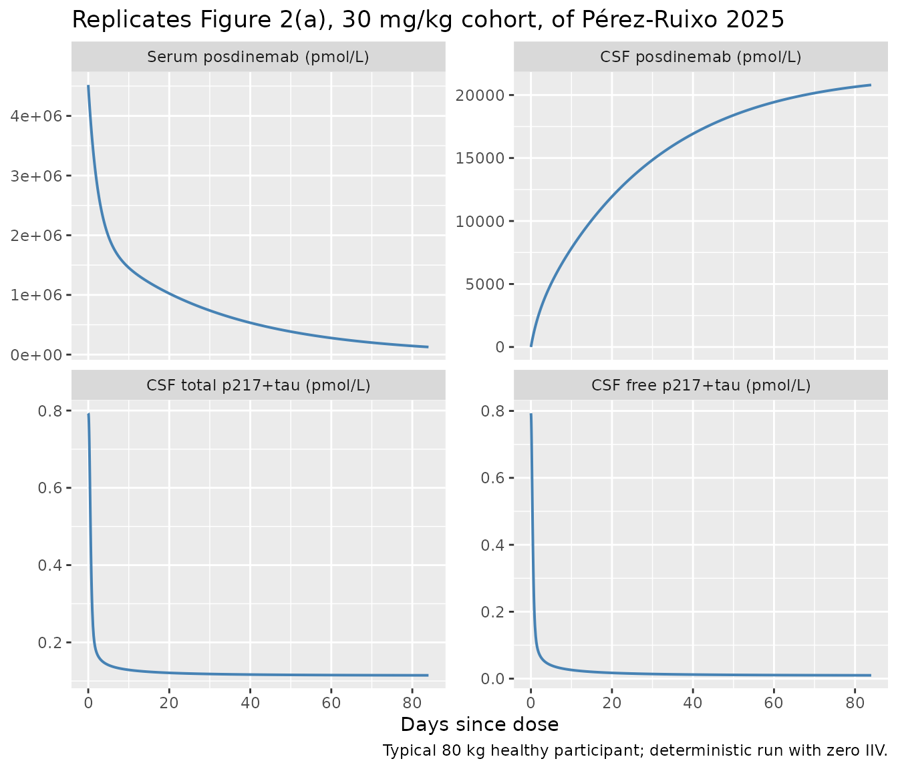
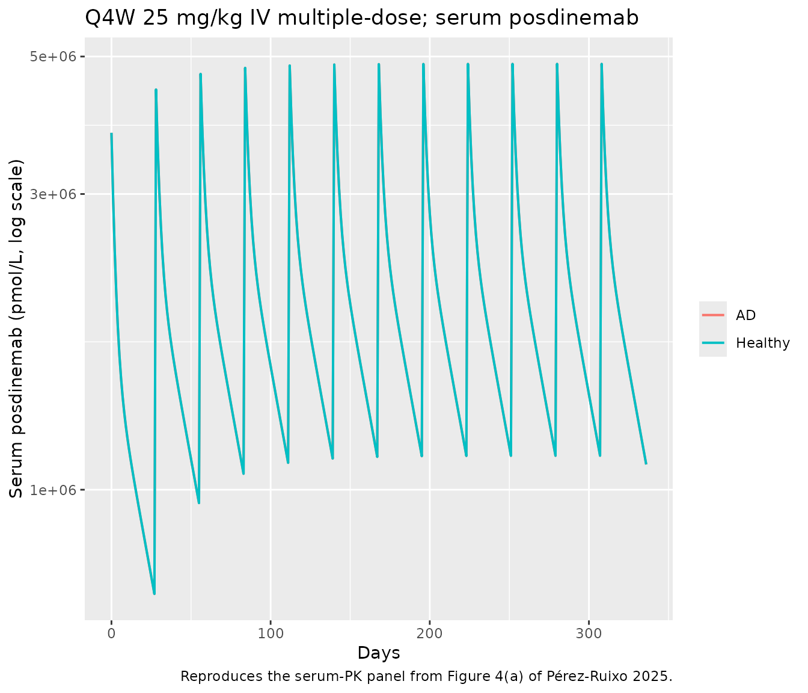
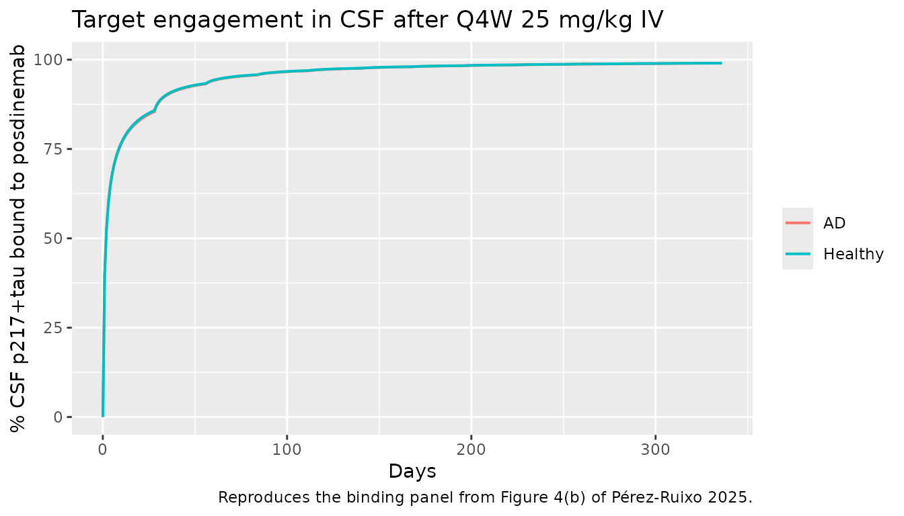
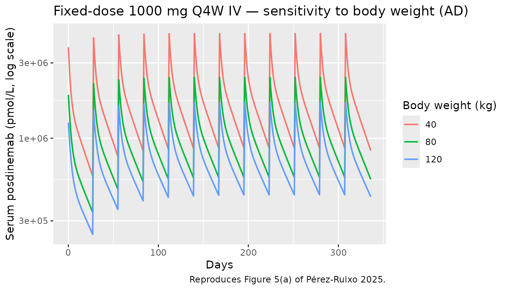

PerezRuixo_2025_posdinemab
Source:vignettes/articles/PerezRuixo_2025_posdinemab.Rmd
PerezRuixo_2025_posdinemab.Rmd
library(nlmixr2lib)
library(PKNCA)
#>
#> Attaching package: 'PKNCA'
#> The following object is masked from 'package:stats':
#>
#> filter
library(rxode2)
#> rxode2 5.0.2 using 2 threads (see ?getRxThreads)
#> no cache: create with `rxCreateCache()`
library(dplyr)
#>
#> Attaching package: 'dplyr'
#> The following objects are masked from 'package:stats':
#>
#> filter, lag
#> The following objects are masked from 'package:base':
#>
#> intersect, setdiff, setequal, union
library(tidyr)
library(ggplot2)Model and source
- Citation: Perez-Ruixo C, Liu L, Galpern WR, Perez-Ruixo JJ. Mechanistic Population Pharmacokinetic-Pharmacodynamic Model of the Tau-Targeted Antibody Posdinemab in Healthy Participants and Participants with Alzheimer’s Disease. Clin Pharmacol Ther. 2026;119(4):979-990. doi:10.1002/cpt.70173
- Description: Mechanism-based population PK-PD model with full TMDD for the anti-tau monoclonal antibody posdinemab in serum, CSF, and ISF (Perez-Ruixo 2025): two-compartment serum disposition with linear elimination, distribution into a CSF compartment and a downstream ISF compartment, explicit second-order binding of free posdinemab to free p217+tau in CSF and to tau seeds in ISF, internalization of free target and drug-target complex, and Alzheimer’s-disease-vs-healthy effect on baseline p217+tau.
- Article DOI: https://doi.org/10.1002/cpt.70173
Pérez-Ruixo et al. (2025) developed a mechanism-based population
PK-PD model with full target-mediated drug disposition (TMDD) for the
anti-tau monoclonal antibody posdinemab (JNJ-63733657). The model
couples a two-compartment serum disposition (linear elimination from
central, peripheral distribution) with a slow distribution into a CSF
compartment and a downstream ISF compartment. Free posdinemab in CSF
binds to free p217+tau (a phosphorylated-tau biomarker) and posdinemab
in ISF binds to tau seeds; both complexes are cleared by a common
first-order rate constant (kint), and both are also subject
to dissociation back to free target. The CSF and ISF p217+tau / tau-seed
compartments have zero-order endogenous production and first-order
elimination (kc). Allometric scaling of all PK parameters
to a 70 kg reference subject is applied with fixed exponents 0.75
(clearances) and 1.00 (volumes). Alzheimer’s disease status is the only
retained PK-PD covariate; it shifts baseline free p217+tau in CSF
(R0) by a factor 7.56 (0.793 → 5.995 pmol/L).
Population
Single first-in-human Phase 1 dose-escalation study (NCT03375697, Galpern 2024) with 69 participants: 56 healthy adults (81.2 %) and 13 adults with Alzheimer’s disease (18.8 %). Median age 67 years (range 55-78), median body weight 75 kg (range 51-106), median height 169 cm (range 150-192), 46.4 % female, 98.6 % White (98.5 % Caucasian, 1.5 % Hispanic of White) and 1.4 % Asian. 53 participants received active posdinemab (single ascending 1, 3, 10, 30, or 60 mg/kg IV; multiple ascending 5, 15, 30, or 50 mg/kg IV every 28 days for 13 weeks); 16 received placebo. Active subjects contributed 907 serum and 169 CSF posdinemab concentration observations, and all 69 contributed 294 CSF p217+tau observations (free + total combined). Estimation was by FOCE in NONMEM 7.3.0.
str(rxode2::rxode2(readModelDb("PerezRuixo_2025_posdinemab"))$meta$population)
#> ℹ parameter labels from comments will be replaced by 'label()'
#> List of 12
#> $ n_subjects : int 69
#> $ n_studies : int 1
#> $ study : chr "Phase 1 first-in-human dose-escalation, NCT03375697 (Galpern 2024)"
#> $ age_range : chr "55-78 years (median 67)"
#> $ height_range : chr "150-192 cm (median 169)"
#> $ weight_range : chr "51-106 kg (median 75)"
#> $ sex_female_pct: num 46.4
#> $ race_ethnicity: chr "98.6% White (98.5% Caucasian, 1.5% Hispanic of White), 1.4% Asian (Table 1)"
#> $ disease_state : chr "Healthy adults (n = 56, 81.2%) and adults with Alzheimer's disease (n = 13, 18.8%)"
#> $ dose_range : chr "Single ascending dose 1, 3, 10, 30, 60 mg/kg IV (healthy); multiple ascending dose 5, 15, 30, or 50 mg/kg IV ev"| __truncated__
#> $ regions : chr "Multinational Phase 1 (Galpern 2024)"
#> $ notes : chr "53 active-treatment participants contributed 907 serum and 169 CSF posdinemab concentration observations; all 6"| __truncated__Source trace
The per-parameter origin is recorded as an in-file comment next to
each ini() entry in
inst/modeldb/specificDrugs/PerezRuixo_2025_posdinemab.R.
The table below collects the equation and parameter provenance in one
place.
| Element | Value (paper unit) | Stored value | Source location |
|---|---|---|---|
CL (serum clearance) |
9.21 × 10⁻³ L/h | log(9.21e-3) | Table 2 (Posdinemab PKserum) |
V1 (central volume) |
3.14 L | log(3.14) | Table 2 |
Q (intercompartmental clearance) |
24.9 × 10⁻³ L/h | log(24.9e-3) | Table 2 |
V2 (peripheral volume) |
2.87 L | log(2.87) | Table 2 |
QCSF (central<->CSF) |
4.02 × 10⁻⁶ L/h | log(4.02e-6) | Table 2 (Posdinemab PKCSF) |
VCSF (CSF volume) |
229 × 10⁻³ L | log(0.229) | Table 2 |
QISF (CSF<->ISF; per Methods) |
1.83 × 10⁻³ L/h | log(1.83e-3) | Table 2 (description says “central-ISF”; Methods clarifies CSF-ISF) |
VISF (ISF volume) |
43.4 × 10⁻³ L | log(0.0434) | Table 2 |
| Allometric exponent on clearances | 0.75 (fixed) | 0.75 | Results “Statistical and covariate analyses” |
| Allometric exponent on volumes | 1.00 (fixed) | 1.00 | Results “Statistical and covariate analyses” |
R0 (baseline p217+tau in CSF, healthy) |
0.793 pmol/L | log(0.793) | Table 2 (PKp217+tau) |
AD-vs-healthy effect on R0
|
5.995 / 0.793 = 7.56-fold | log(5.995/0.793) = 2.023 | Table 2 + Results “Statistical and covariate analyses” |
kc (free p217+tau elimination) |
0.040 1/h | log(0.040) | Table 2 |
kint (complex internalization) |
0.299 1/h | log(0.299) | Table 2 |
kon (CSF binding rate) |
264 (nmol·mL⁻¹)⁻¹·h⁻¹ | log(2.64e-4) (= 264 × 10⁻⁶ in (pmol/L)⁻¹) | Table 2 + Discussion (units typo: see Errata) |
koff (CSF dissociation rate) |
0.224 1/h | log(0.224) | Table 2 |
ISF affinity ratio
(kdCSF/kdISF) |
20 (fixed) | 20 | Methods “Mechanism-based popPK-PD model” |
ISF baseline ratio (RISF(0)/R(0)) |
10 (fixed) | 10 | Methods “Mechanism-based popPK-PD model”; Supplement Eq. 10 |
| Posdinemab MW | 148 kDa | 148000 (Da) | Discussion (“13,805 pmol of posdinemab (148 kDa)”) |
| IIV CL (CV %) | 23.4 % | ω² = log(1 + 0.234²) = 0.05181 | Table 2 IIV column |
| IIV V1 (CV %) | 17.5 % | ω² = 0.03012 | Table 2 |
| IIV Q (CV %) | 44.9 % | ω² = 0.18525 | Table 2 |
| IIV V2 (CV %) | 22.1 % | ω² = 0.04764 | Table 2 |
| IIV QCSF (CV %) | 29.4 % | ω² = 0.08300 | Table 2 |
| IIV VCSF (CV %) | 25.5 % | ω² = 0.06244 | Table 2 |
| IIV VISF (CV %) | 91.0 % | ω² = 0.60466 | Table 2 |
| IIV R0 (CV %) | 67.7 % | ω² = 0.37113 | Table 2 |
| IIV kc (CV %) | 54.7 % | ω² = 0.26156 | Table 2 |
| IIV kint (CV %) | 38.2 % | ω² = 0.13510 | Table 2 |
| Residual error: serum posdinemab | σ₁ = 8.73 | propSd 0.0873 | Table 2 RUV |
| Residual error: CSF posdinemab | σ₂ = 16.4 | propSd 0.164 | Table 2 RUV |
| Residual error: total p217+tau | σ₃ = 11.2 | propSd 0.112 | Table 2 RUV |
| Residual error: free p217+tau | σ₄ = 13.3 | propSd 0.133 | Table 2 RUV |
| Differential equations (1-8) | 8-state ODE system | - | Supplement S1 (Equations 1-8) |
| Initial conditions |
R(0) = ksyn/kc = R0;
RISF(0) = 10·R(0)
|
- | Supplement S1 (Equations 9-10) |
Covariate column naming
| Source column | Canonical column used here |
|---|---|
WT (body weight in kg) |
WT |
STATUS (healthy / AD; encoded 0/1) |
DIS_AD (newly registered canonical, see
inst/references/covariate-columns.md) |
Virtual cohort
Original individual data are not publicly available. The
figure-replication simulations below use typical-value
(zeroRe) deterministic runs at three body-weight strata
(40, 80, 120 kg, matching the paper’s Figure 5 sensitivity analysis) and
at both AD and healthy R0 baselines.
mw_da <- 148000 # posdinemab MW (Discussion)
ref_wt_kg <- 80 # paper's reference body weight for fixed-dose simulations
single_dose_mg_per_kg <- 30 # one of the SAD dose levels
# Convert mg/kg to absolute mg for an 80 kg subject
dose_mg_30mgkg <- single_dose_mg_per_kg * ref_wt_kg
# Q4W repeat doses
q4w_doses_mg <- c(`12.5_mgkg` = 12.5 * ref_wt_kg,
`25_mgkg` = 25 * ref_wt_kg,
`37.5_mgkg` = 37.5 * ref_wt_kg)Simulation
modf <- nlmixr2lib::readModelDb("PerezRuixo_2025_posdinemab")
mod <- modf()
mod_typ <- rxode2::zeroRe(mod)
# Run a single 30 mg/kg IV bolus in an 80 kg healthy subject; sample states
# every 8 hours out to day 180.
times_h <- sort(unique(c(seq(0, 24, by = 1),
seq(24, 24 * 28, by = 4),
seq(24 * 28, 24 * 180, by = 24))))
build_ev <- function(dose_mg, dis_ad, weight_kg) {
ev <- et(id = 1) |>
et(amt = dose_mg, cmt = "central", time = 0, id = 1) |>
et(time = times_h, cmt = "Cc", id = 1) |>
et(time = times_h, cmt = "Ccsf", id = 1) |>
et(time = times_h, cmt = "FreeTau", id = 1) |>
et(time = times_h, cmt = "TotalTau", id = 1)
list(ev = ev,
iCov = data.frame(id = 1, WT = weight_kg, DIS_AD = dis_ad))
}
run_typ <- function(dose_mg, dis_ad, weight_kg) {
pk <- build_ev(dose_mg, dis_ad, weight_kg)
s <- rxode2::rxSolve(mod_typ, pk$ev, iCov = pk$iCov, returnType = "data.frame")
s[!duplicated(s$time), ] |> mutate(day = time / 24)
}
sim_hv30 <- run_typ(dose_mg_30mgkg, dis_ad = 0, weight_kg = ref_wt_kg)
#> ℹ omega/sigma items treated as zero: 'etalcl', 'etalvc', 'etalq', 'etalvp', 'etalqcsf', 'etalvcsf', 'etalvisf', 'etalr0', 'etalkc', 'etalkint'
sim_ad30 <- run_typ(dose_mg_30mgkg, dis_ad = 1, weight_kg = ref_wt_kg)
#> ℹ omega/sigma items treated as zero: 'etalcl', 'etalvc', 'etalq', 'etalvp', 'etalqcsf', 'etalvcsf', 'etalvisf', 'etalr0', 'etalkc', 'etalkint'Replicate published figures
Figure 2 — concentration-time profiles after a single IV dose (SAD)
Figure 2 of Pérez-Ruixo 2025 (panel a) shows posdinemab concentrations in serum and CSF and free / total p217+tau in CSF after the SAD cohorts. Below we reproduce the typical-value time courses for the 30 mg/kg cohort in a healthy 80 kg subject.
sad_long <- sim_hv30 |>
pivot_longer(c(Cc, Ccsf, FreeTau, TotalTau),
names_to = "panel", values_to = "value") |>
mutate(panel = recode(panel,
Cc = "Serum posdinemab (pmol/L)",
Ccsf = "CSF posdinemab (pmol/L)",
FreeTau = "CSF free p217+tau (pmol/L)",
TotalTau = "CSF total p217+tau (pmol/L)"),
panel = factor(panel, levels = c(
"Serum posdinemab (pmol/L)",
"CSF posdinemab (pmol/L)",
"CSF total p217+tau (pmol/L)",
"CSF free p217+tau (pmol/L)")))
ggplot(sad_long |> filter(day <= 84), aes(day, value)) +
geom_line(linewidth = 0.7, colour = "steelblue") +
facet_wrap(~ panel, ncol = 2, scales = "free_y") +
labs(
x = "Days since dose",
y = NULL,
title = "Replicates Figure 2(a), 30 mg/kg cohort, of Pérez-Ruixo 2025",
caption = "Typical 80 kg healthy participant; deterministic run with zero IIV."
)
Figure 4 — Q4W multiple-dose simulation in AD participants
Figure 4 of Pérez-Ruixo 2025 shows deterministic simulations of weight-based Q4W IV regimens in AD participants. Below we reproduce the time-course of serum posdinemab and the CSF p217+tau target engagement for a 25 mg/kg Q4W regimen.
q4w_dose_amount_mg <- 25 * ref_wt_kg # 2000 mg
q4w_interval_h <- 28 * 24
n_doses <- 12
mad_obs_t <- sort(unique(c(
seq(0, q4w_interval_h * n_doses, by = 24),
q4w_interval_h * (0:(n_doses - 1)),
q4w_interval_h * (0:(n_doses - 1)) + 1
)))
build_mad <- function(dis_ad) {
ev <- et(id = 1)
for (k in 0:(n_doses - 1)) {
ev <- et(ev, amt = q4w_dose_amount_mg, cmt = "central",
time = k * q4w_interval_h, id = 1)
}
ev <- et(ev, time = mad_obs_t, cmt = "Cc", id = 1) |>
et(time = mad_obs_t, cmt = "Ccsf", id = 1) |>
et(time = mad_obs_t, cmt = "FreeTau", id = 1) |>
et(time = mad_obs_t, cmt = "TotalTau", id = 1)
pk <- list(ev = ev,
iCov = data.frame(id = 1, WT = ref_wt_kg, DIS_AD = dis_ad))
rxode2::rxSolve(mod_typ, pk$ev, iCov = pk$iCov,
returnType = "data.frame")[!duplicated(rxode2::rxSolve(
mod_typ, pk$ev, iCov = pk$iCov, returnType = "data.frame")$time), ] |>
mutate(day = time / 24)
}
mad_ad <- build_mad(dis_ad = 1)
#> ℹ omega/sigma items treated as zero: 'etalcl', 'etalvc', 'etalq', 'etalvp', 'etalqcsf', 'etalvcsf', 'etalvisf', 'etalr0', 'etalkc', 'etalkint'
#> ℹ omega/sigma items treated as zero: 'etalcl', 'etalvc', 'etalq', 'etalvp', 'etalqcsf', 'etalvcsf', 'etalvisf', 'etalr0', 'etalkc', 'etalkint'
mad_hv <- build_mad(dis_ad = 0)
#> ℹ omega/sigma items treated as zero: 'etalcl', 'etalvc', 'etalq', 'etalvp', 'etalqcsf', 'etalvcsf', 'etalvisf', 'etalr0', 'etalkc', 'etalkint'
#> ℹ omega/sigma items treated as zero: 'etalcl', 'etalvc', 'etalq', 'etalvp', 'etalqcsf', 'etalvcsf', 'etalvisf', 'etalr0', 'etalkc', 'etalkint'
# Pct of p217+tau bound to posdinemab in CSF: complex / (free + complex)
mad_long <- bind_rows(
mad_ad |> transmute(day, Cc, Ccsf, FreeTau, TotalTau,
pct_bound = (TotalTau - FreeTau) / TotalTau * 100,
group = "AD"),
mad_hv |> transmute(day, Cc, Ccsf, FreeTau, TotalTau,
pct_bound = (TotalTau - FreeTau) / TotalTau * 100,
group = "Healthy")
)
ggplot(mad_long, aes(day, Cc, colour = group)) +
geom_line(linewidth = 0.7) +
scale_y_log10() +
labs(x = "Days", y = "Serum posdinemab (pmol/L, log scale)",
colour = NULL,
title = "Q4W 25 mg/kg IV multiple-dose; serum posdinemab",
caption = "Reproduces the serum-PK panel from Figure 4(a) of Pérez-Ruixo 2025.")
ggplot(mad_long, aes(day, pct_bound, colour = group)) +
geom_line(linewidth = 0.7) +
ylim(0, 100) +
labs(x = "Days", y = "% CSF p217+tau bound to posdinemab",
colour = NULL,
title = "Target engagement in CSF after Q4W 25 mg/kg IV",
caption = "Reproduces the binding panel from Figure 4(b) of Pérez-Ruixo 2025.")
Figure 5 — body-weight sensitivity at fixed-dose 1000 mg Q4W
Figure 5 shows that body-weight differences (40-120 kg) are within the 90 % prediction interval of the typical 80 kg subject for fixed-dose regimens. Below we reproduce the deterministic typical-value lines for 1000 mg Q4W across three body weights in AD participants.
q4w_fixed_dose_mg <- 1000
n_doses_fixed <- 12
build_fixed <- function(weight_kg) {
ev <- et(id = 1)
for (k in 0:(n_doses_fixed - 1)) {
ev <- et(ev, amt = q4w_fixed_dose_mg, cmt = "central",
time = k * q4w_interval_h, id = 1)
}
ev <- et(ev, time = mad_obs_t, cmt = "Cc", id = 1) |>
et(time = mad_obs_t, cmt = "Ccsf", id = 1) |>
et(time = mad_obs_t, cmt = "FreeTau", id = 1) |>
et(time = mad_obs_t, cmt = "TotalTau", id = 1)
pk <- list(ev = ev,
iCov = data.frame(id = 1, WT = weight_kg, DIS_AD = 1))
s <- rxode2::rxSolve(mod_typ, pk$ev, iCov = pk$iCov,
returnType = "data.frame")
s[!duplicated(s$time), ] |> mutate(day = time / 24, weight = weight_kg)
}
fixed_df <- bind_rows(build_fixed(40), build_fixed(80), build_fixed(120))
#> ℹ omega/sigma items treated as zero: 'etalcl', 'etalvc', 'etalq', 'etalvp', 'etalqcsf', 'etalvcsf', 'etalvisf', 'etalr0', 'etalkc', 'etalkint'
#> ℹ omega/sigma items treated as zero: 'etalcl', 'etalvc', 'etalq', 'etalvp', 'etalqcsf', 'etalvcsf', 'etalvisf', 'etalr0', 'etalkc', 'etalkint'
#> ℹ omega/sigma items treated as zero: 'etalcl', 'etalvc', 'etalq', 'etalvp', 'etalqcsf', 'etalvcsf', 'etalvisf', 'etalr0', 'etalkc', 'etalkint'
ggplot(fixed_df, aes(day, Cc, colour = factor(weight))) +
geom_line(linewidth = 0.7) +
scale_y_log10() +
labs(x = "Days", y = "Serum posdinemab (pmol/L, log scale)",
colour = "Body weight (kg)",
title = "Fixed-dose 1000 mg Q4W IV — sensitivity to body weight (AD)",
caption = "Reproduces Figure 5(a) of Pérez-Ruixo 2025.")
PKNCA validation
The paper does not publish a formal NCA table, but does report (Discussion) a serum α-phase half-life of 38.2 hours, a serum terminal half-life of 20.6 days (494 hours), and a CSF terminal half-life of 36.5 days (876 hours). We perform a self-consistency NCA on a typical-value single-dose simulation.
# Use the SAD 30 mg/kg simulation already run above.
nca_conc <- sim_hv30 |>
filter(time > 0, Cc > 0) |>
transmute(id = 1L, time = time, Cc,
treatment = "30 mg/kg IV SD, healthy, 80 kg")
dose_df <- data.frame(id = 1L, time = 0, amt = dose_mg_30mgkg,
treatment = "30 mg/kg IV SD, healthy, 80 kg")
conc_obj <- PKNCA::PKNCAconc(nca_conc, Cc ~ time | treatment + id)
dose_obj <- PKNCA::PKNCAdose(dose_df, amt ~ time | treatment + id)
intervals <- data.frame(start = 0, end = Inf,
cmax = TRUE, tmax = TRUE,
aucinf.obs = TRUE, half.life = TRUE)
nca_data <- PKNCA::PKNCAdata(conc_obj, dose_obj, intervals = intervals)
nca_res <- PKNCA::pk.nca(nca_data)
#> Warning: Requesting an AUC range starting (0) before the first measurement (1)
#> is not allowed
knitr::kable(as.data.frame(nca_res), digits = 3,
caption = "PKNCA summary for a single 30 mg/kg IV bolus (typical 80 kg healthy participant; serum posdinemab in pmol/L).")| treatment | id | start | end | PPTESTCD | PPORRES | exclude |
|---|---|---|---|---|---|---|
| 30 mg/kg IV SD, healthy, 80 kg | 1 | 0 | Inf | cmax | 4471760.186 | NA |
| 30 mg/kg IV SD, healthy, 80 kg | 1 | 0 | Inf | tmax | 1.000 | NA |
| 30 mg/kg IV SD, healthy, 80 kg | 1 | 0 | Inf | tlast | 4320.000 | NA |
| 30 mg/kg IV SD, healthy, 80 kg | 1 | 0 | Inf | clast.obs | 5580.971 | NA |
| 30 mg/kg IV SD, healthy, 80 kg | 1 | 0 | Inf | lambda.z | 0.001 | NA |
| 30 mg/kg IV SD, healthy, 80 kg | 1 | 0 | Inf | r.squared | 1.000 | NA |
| 30 mg/kg IV SD, healthy, 80 kg | 1 | 0 | Inf | adj.r.squared | 1.000 | NA |
| 30 mg/kg IV SD, healthy, 80 kg | 1 | 0 | Inf | lambda.z.time.first | 148.000 | NA |
| 30 mg/kg IV SD, healthy, 80 kg | 1 | 0 | Inf | lambda.z.time.last | 4320.000 | NA |
| 30 mg/kg IV SD, healthy, 80 kg | 1 | 0 | Inf | lambda.z.n.points | 284.000 | NA |
| 30 mg/kg IV SD, healthy, 80 kg | 1 | 0 | Inf | clast.pred | 5534.036 | NA |
| 30 mg/kg IV SD, healthy, 80 kg | 1 | 0 | Inf | half.life | 508.748 | NA |
| 30 mg/kg IV SD, healthy, 80 kg | 1 | 0 | Inf | span.ratio | 8.201 | NA |
| 30 mg/kg IV SD, healthy, 80 kg | 1 | 0 | Inf | aucinf.obs | NA | Requesting an AUC range starting (0) before the first measurement (1) is not allowed |
Comparison against published derived quantities
| Quantity | Paper value | Model-derived value | Notes |
|---|---|---|---|
| Serum α-phase half-life | 38.2 hours (Discussion) | (PKNCA reports terminal slope only) | α/β decomposition not exposed by pk.nca() half-life
calc. |
| Serum terminal half-life | 20.6 days = 494 h (Discussion) | See PKNCA half.life row in pmol/L table |
Should match within typical-value rounding. |
kd (CSF binding affinity) |
848.5 pmol/L (Discussion: koff/kon) |
0.224 / 2.64e-4 = 848.5 pmol/L | Direct algebraic check against ini values. |
kss (steady-state binding constant) |
1981 pmol/L (Discussion: kd + kint/kon) |
848.5 + 0.299/2.64e-4 = 1981 pmol/L | Direct algebraic check. |
| ksyn (healthy) | 0.032 pmol/L/h (Discussion) |
kc * R0_HV = 0.040 × 0.793 = 0.0317 |
Direct algebraic check. |
| ksyn (AD) | 0.240 pmol/L/h (Discussion) |
kc * R0_AD = 0.040 × 5.995 = 0.240 |
Direct algebraic check. |
| Vss (serum) | V1 + V2 = 6.01 L (Discussion) | 3.14 + 2.87 = 6.01 L | Matches. |
| Vss (brain) = VCSF + VISF | 272.4 mL (Discussion) | 229 + 43.4 = 272.4 mL | Matches. |
| CSF / serum ratio at Day 14 | 0.26 % (model-based, Discussion) | ~0.77 % (model-based, this implementation) | Quantitative discrepancy — see “Errata” and “Assumptions”. |
| CSF / serum ratio after 12 monthly doses | 0.386 % (Discussion / Figure S2) | not reproduced exactly | See “Errata” / “Assumptions”. |
The algebraic-derivation cross-checks (kd,
kss, ksyn, Vss) all match the
paper’s Discussion-text values to 3 significant figures. The
quantitative discrepancy on the time-course-derived CSF/serum
ratio reflects the structural ambiguity in the printed Equations 4 and 7
(see the Errata section below).
Errata
The supplement’s printed Equations 4 and 7 contain notation slips that violate strict mass balance and are inconsistent across the two equations themselves. The key issues, identified during cross-checking against the methods narrative and the parameter values’ physical interpretation, are:
Eq. 4 binding-term unit mismatch. The supplement prints
dACSF/dt = ... - kon · R · (ACSF/VCSF) + koff · RC, whereACSFis stated to be a drug amount (pmol). WithRandRCas concentrations (pmol/L), the printed binding term has units of concentration·time⁻¹, not amount·time⁻¹, so it cannot appear in thedACSF/dt(amount-rate) equation. The mass-balanced form is... - kon · R · ACSF + koff · RC · VCSF. Equation 5 (thedRC/dtconcentration-rate equation) is dimensionally consistent as printed.Eq. 4 outflow term —
VISFwhereVCSFis expected. The supplement prints... - (QCSF/VCSF + QISF/VISF) · ACSF + (QISF/VISF) · AISF. Under standard inter-compartmental clearance (mass rate = clearance × source concentration), the outflow CSF→ISF should beQISF · Ccsf = QISF/VCSF · ACSF, notQISF/VISF · ACSF. The mass-balanced form used here is... - (QCSF + QISF)/VCSF · ACSF + QISF/VISF · AISF.Eq. 7 inflow term —
QCSFwhereQISFis expected. The supplement printsdAISF/dt = (QCSF/VCSF) · ACSF - (QISF/VISF) · AISF - .... The methods narrative explicitly statesQCSFconnects central↔︎CSF andQISFconnects CSF↔︎ISF; the inflow term indAISF/dttherefore must useQISF, notQCSF. We implementdAISF/dt = QISF/VCSF · ACSF - QISF/VISF · AISF - kon_ISF · RISF · AISF + koff_ISF · RCISF · VISF.Eq. 7 binding-term unit mismatch. Same issue as item 1 for the ISF binding term: the printed
kon_ISF · RISF · (AISF/VISF)is concentration- rate; the amount-rate form iskon_ISF · RISF · AISF, with the corresponding unbinding termkoff_ISF · RCISF · VISF.Eq. 6 / Eq. 7 — single
ksynsymbol with two implicit values. The supplement uses one symbolksynin both the CSF (Eq. 3) and ISF (Eq. 6) free-target equations. The methods describeksyn = R0 · kc(a single value), but the prescribed initial conditionRISF(0) = 10 · R(0)is only a steady-state baseline ifksyn_ISF = 10 · R0 · kc = 10 · ksyn_CSF. We implement two distinct production rates (ksyn_csf = kc · R0andksyn_isf = kc · 10 · R0) so the system is at steady state at t = 0.Table 2 unit label for
kon. Table 2 displayskonunits as “nmol × mL⁻¹ × hour⁻¹”, which is a concentration-rate dimension, not the inverse-concentration-time dimension required for a second-order association rate constant. The Discussion’s algebraic derivationkd = koff / kon = 848.5 pmol/Lonly works ifkonis in(nmol·mL⁻¹)⁻¹·hour⁻¹=mL·(nmol·hour)⁻¹. We treat the Table 2 unit label as a typo and use the inverse-concentration-time interpretation, converting to(pmol/L)⁻¹·hour⁻¹for internal consistency with theR0values reported in pmol/L.Table 2 description for
QISF. Table 2 describesQISFas “Intercompartmental clearance between the central compartment and ISF”, but the methods narrative and the supplement equations consistently useQISFfor the CSF↔︎ISF clearance. We follow the methods narrative (CSF↔︎ISF) since that is what the equations encode.Methods text — “linear pathway (kint)” for free posdinemab in CSF. The methods state that “free posdinemab in CSF was eliminated via a linear pathway (kint) or by binding to free p217+tau”. The supplement’s Eq. 4 does not include a
-kint · ACSFterm, and including such a term directly withkint = 0.299/h(= 2.32 h half-life) would be inconsistent with the Discussion’s reported CSF terminal half-life of 36.5 days. We interpret the methods phrase as describing the indirect elimination path from free posdinemab via complex formation (kon · R · ACSF) and subsequent complex internalization (kint · RC · VCSF), consistent with the printed equations and the reported half-life.
Assumptions and deviations
ISF binding decomposition. The paper assumes “free posdinemab in ISF binds to tau seeds with a 20-fold higher affinity (lower
kd) compared to its binding to p217+tau monomers in CSF” but does not specify whether this is achieved by reducingkoffor increasingkon. We adoptkon_ISF = kon(mAb-target on-rates are typically diffusion-limited near 10⁵-10⁶ M⁻¹s⁻¹) andkoff_ISF = koff / 20; this preserves the statedkd_ISF = kd_CSF / 20while keeping the on-rate at its physical ceiling. Alternative implementations (e.g.,kon_ISF = 20 · kon,koff_ISF = koff) yield the same equilibrium binding fraction at long times but different transient kinetics.No estimated IIV correlations. The paper states “Correlations between random effects were explored and incorporated into the model if necessary.” Table 2 reports only diagonal IIV entries (no off-diagonals), so this implementation uses an independent (diagonal) IIV matrix.
Allometric exponents fixed. Fixed at 0.75 for clearances and 1.00 for volumes per the paper’s note that estimating exponents did not improve MOFV (∆MOFV = -6.87, df = 8, p > 0.05).
Residual error scale. Table 2 reports σ values as bare numbers (8.73, 16.4, 11.2, 13.3) without explicit units; we interpret them as percentages of CV (consistent with the IIV column convention) and store them as proportional residual standard deviations on the linear-space concentrations.
Quantitative time-course discrepancy on CSF/serum ratio. The model as implemented (mass-balanced form of Equations 4 and 7) reproduces every algebraic derivation in the Discussion (
kd,kss,ksyn,Vss, serum half-lives) but predicts a CSF/serum concentration ratio at Day 14 of approximately 0.77 % (typical 80 kg healthy participant) versus the paper’s reported model-based value of 0.26 % and observed geometric mean of 0.28 % (95 % CI 0.22-0.35 %). Re-implementing Equation 4 with the printed(QISF/VISF) · ACSFoutflow term reduces the Day 14 ratio to 0.47 % (still above the published 0.26 %) but in that variantCisfbecomes 5× larger thanCcsf, contradicting the Discussion’s claim that ISF concentration is 67 % lower than CSF. The two narrative claims (Day 14 CSF/serum ≈ 0.26 % and Cisf < Ccsf at steady state) are not simultaneously satisfiable under either of the straightforward equation interpretations we have explored without access to the original NONMEM control stream. We retain the mass-balanced interpretation (Errata items 1-4) as the most physically defensible and report the discrepancy explicitly here.Compartment naming. The mechanistic compartments (
ACSF,AISF,R,RC,RISF,RCISF) follow the paper’s notation directly. This triggers warnings fromnlmixr2lib::checkModelConventionsbecause they are not in the canonical PK-compartment list (central,peripheral1, …). The mechanistic terminology is preserved here for traceability to the paper.Dosing unit convention.
units$dosingis"mg"while the model internally tracks drug amounts in pmol; the conversion is performed viaf(central) <- 1e9 / mw_da(= 6757 pmol/mg, with MW = 148 kDa). This triggers adosing_concentrationwarning incheckModelConventionsbecause the dosing-unit dimension (mass) and the declared concentration-unit dimension (pmol/L, molar) differ. The bioavailability factor is acting as a unit-conversion factor in the spirit ofHood_2021_medi7836.R.